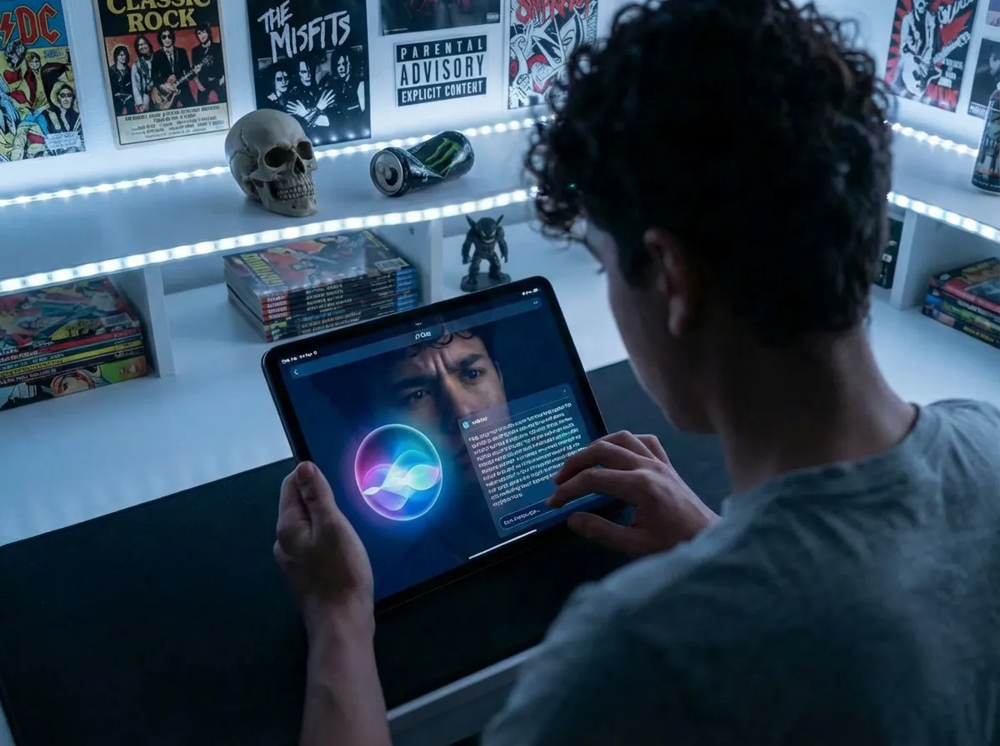
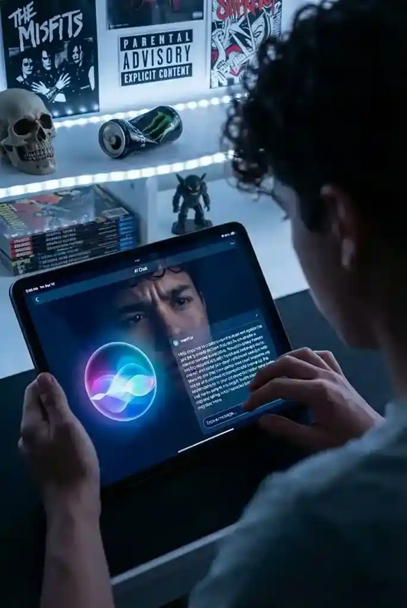
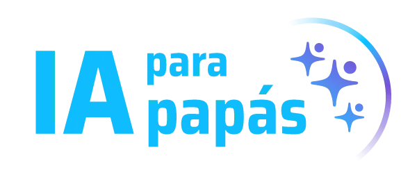

El primer curso en vivo para padres que quieren recuperar autoridad tranquila en la era de la IA — sin alarmismo, sin tecnicismos, con un marco claro que funciona en la vida real.
Por Rudy Laddaga | Gnius Club
Consejo Directivo, World Summit Award - ONU
Pioneros en IA desde 2018

Son las 11:47 pm. Teléfono en mano. Acabas de leer otro artículo sobre IA y adolescentes.
Cierras el navegador.
Te prometes que mañana hablarás con tus hijos sobre "esto".
Pero no sabes exactamente qué decir. Ni cómo justificar las reglas que sabes que deberías poner.
Y esta sensación se repite.
El problema no es la IA.
Es que estás tomando decisiones importantes sobre la vida de tus hijos sin un marco claro.
Pero no eres el único.
La escuela tampoco tiene
todas las respuestas.
Los expertos
se contradicen.
Y mientras tanto,
la IA ya está conversando con tus hijos.
He pasado 20 años evaluando el futuro de la educación como miembro del Consejo Directivo del World Summit Award de las Naciones Unidas—la iniciativa que premia las soluciones digitales con impacto social más importantes del mundo.
En 2018, cuando ChatGPT ni siquiera existía, ya estábamos enseñando IA a niños en colegios de México.
Este curso no es una reacción al pánico mediático.
Es la destilación de años observando cómo los niños realmente interactúan con sistemas inteligentes—antes de que fuera trending, cuando todavía podíamos observar sin el ruido.
Porque la IA no es solo una herramienta.
Está enseñando a tus hijos cómo validar emociones, tomar decisiones, pensar sobre problemas complejos.
Y lo hace con paciencia infinita, validación constante y cero frustración.
¿El resultado?
Niños funcionalmente dependientes de una máquina para regulación emocional, toma de decisiones y pensamiento crítico.
No porque la IA sea mala.
Sino porque nadie puso el marco humano primero.
No tienes que volverte experto en IA.
No tienes que entender cómo funciona técnicamente.
Lo que SÍ necesitas:
Un marco claro que te devuelva autoridad.
Porque la tranquilidad no viene de controlar todo.
Viene de saber por qué pones los límites que pones.
De poder explicarle a tu hijo por qué esta conversación va con un humano, no con ChatGPT.
Por qué esta tarea se hace con esfuerzo propio.
Por qué esta emoción necesita sentirse, no "arreglarse" inmediatamente.
Sin sonar desactualizado.
Sin improvisación.
Con criterio.
Diagnóstico
(Selecciona las situaciones familiares que te resulten familiares para realizar tu autodiagnóstico)
Riesgo Detectado
Requiere Acción Inmediata
Si respondiste "sí" a 3 o más...
7 Sesiones en Vivo
1 Hora por sesión LIVE
Martes y Jueves
7:00 PM (CDMX)
Fecha de Inicio
7 de Abril de 2026
Lo que realmente es la IA, cómo ya vive en tu casa, y por qué suena tan convincente incluso cuando está equivocada.
Por qué tus hijos son particularmente vulnerables, qué es el "Validation Feedback Loop", y cómo detectar dependencia emocional temprana.
Lo que la IA sabe de tu hijo, cómo se construye su perfil digital permanente, y las implicaciones que nadie te está explicando.
Deepfakes, estafas con voces clonadas, desinformación... y los protocolos específicos que funcionan en familias reales.
La línea clara entre "herramienta de aprendizaje" y "muleta cognitiva" —y cómo hablar de esto con maestros sin sonar paranoico.
Qué desarrollar en tus hijos para que sean competitivos (no obsoletos) en un mundo con IA avanzada.
Protocolos específicos, señales de alerta, límites que funcionan, y el "Contrato Familiar de IA" que implementarás desde la última sesión.
De 1 hora + grabaciones para consulta permanente.
Exclusivos para uso familiar responsable con IA.
Acceso gratuito por 1 año a SAFE (Seguridad y Acciones para Familias Enlazadas).
Navegando los mismos desafíos en un entorno privado.
$500
USD
Pago seguro 100% encriptado
Garantía de
Satisfacción 100%
Inversión Protegida
Si completas las 7 sesiones y aplicas las herramientas, saldrás con criterio claro.
Resultados Garantizados
Un marco que te permite decidir con confianza
Lenguaje para hablar de esto con tus hijos sin sonar desconectado
Protocolos que implementas desde mañana
La sensación de que recuperaste autoridad tranquila
Si sientes que no obtuviste esto, te devolvemos el 100% de tu inversión.
Sin preguntas incómodas.
Mientras lees esto, tus hijos están conversando con IA
Hoy.
Y cada conversación está formando cómo validan emociones, toman decisiones, qué esperan de las relaciones.
El uso ya está ocurriendo.
La pregunta no es "¿debería preocuparme?"
La pregunta es:
¿Quién está poniendo el marco: yo o el algoritmo?
Este curso empieza la semana después de Semana Santa.
Opción A
Opción B (Recomendada)
O puedes hacer esto:
Y dormir tranquilo sabiendo que no estás llegando tarde.
Un último pensamiento:
"He evaluado soluciones educativas de 180 países. He visto lo mejor de lo mejor. Y puedo decirte esto con certeza: La mejor tecnología del mundo no reemplaza a un adulto con criterio claro."
"Este curso no te hace experto en IA. Te devuelve lo que la IA nunca podrá quitarte: tu autoridad como padre."

$500 USD
Inicio: Semana después de Semana Santa 2025
Martes y Jueves | 7:00 PM (CDMX)
→ Cupos Limitados
Garantía de Satisfacción 100%
Si completas las 7 sesiones y aplicas las herramientas, no sientes que obtuviste criterio claro, te devolvemos tu inversión completa.